Переносим mds.by с Тильды на код и выводим каждую услугу в поиск Минска
Дизайн остаётся вашим. Меняется то, что под ним: страниц столько, сколько есть спроса, своя админка с заявками и аналитикой, ответы в нейросетях.
Стоимость и план →Копия mds.by на коде уже собрана – можно открыть и полистать
Тот же дизайн, те же тексты и фото, все страницы услуг. Разница в том, что теперь сайт не упирается в возможности конструктора: меню, блоки, фильтры и любые технические вещи делаем так, как нужно бизнесу, а не как разрешает Тильда.
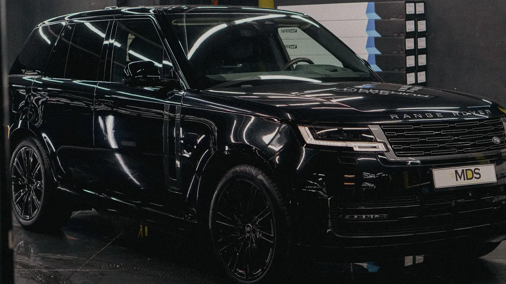
Дизайн – ваш
Ничего не перерисовываем ради переезда. Клиенты увидят привычный сайт.
Ограничений почти нет
Сотни страниц с правильными адресами, блог, калькуляторы, конфигураторы – всё, что на Тильде делалось обходными путями или не делалось вовсе.
Переезд без потерь в поиске
Старые адреса переводим на новые 301-й переадресацией, чтобы накопленные позиции не пропали.
Каждый месяц 28 713 раз в Минске ищут то, что вы делаете
Это только «горячие» запросы – с городом, ценой, «где сделать». Курсы, «своими руками» и покупку материалов мы убрали. Чтобы забрать эти заявки, под каждую услугу нужна своя сильная страница: с ценами, сроками, примерами работ.
| Услуга | Ищут в месяц | Мимо вас, BYN/мес |
|---|---|---|
| Антикорантикор минск · антикор днища · антикор авто | 9 586 | 31 тыс. |
| Тонировкатонировка минск · тонировка авто в минске · тонировка цена | 4 924 | 5 672 |
| Детейлинг (общий запрос)детейлинг минск · детейлинг студия · детейлинг центр | 3 671 | 23 тыс. |
| Оклейка плёнкойоклейка авто плёнкой в минске · оклейка плёнкой цена | 3 358 | 93 тыс. |
| Бронеплёнкабронеплёнка минск · оклейка бронеплёнкой минск | 2 217 | 19 тыс. |
| Химчистка салонахимчистка салона минск · химчистка салона автомобиля цена | 1 286 | 2 160 |
| Полировка кузоваполировка авто в минске цены · полировка кузова авто | 1 271 | 4 118 |
| Шумоизоляцияшумоизоляция автомобиля в минске · шумоизоляция арок | 1 234 | 3 672 |
| Восстановление и полировка фарполировка фар минск · полировка фар цена | 1 064 | 511 |
| Керамикапокрытие керамикой авто · покрытие кузова керамикой | 102 | 318 |
| Итого по детейлингу | 28 713 | ≈184 тыс. |
Спрос – Яндекс Вордстат за октябрь 2026 по Минску, Google досчитан по доле поисковиков в Беларуси. «Мимо вас» – наша оценка: половина кликов уходит на сайты, сайт в первой тройке получает около 20 % из них, 8 % звонят, 60 % приезжают; средний чек – по прайсам детейлинг-центров Минска. Это ориентир, а не обещание: точнее покажет ваша Метрика через месяц работы.
Наш техцентр в Новосибирске: перенесли на код – и за месяц 119 обращений
EV Service – сайт техцентра по китайским автомобилям. Переехал с Тильды на код чуть больше месяца назад: домен старый, сайт новый. Сейчас на нём 351 страница – услуги, марки, модели, блог.
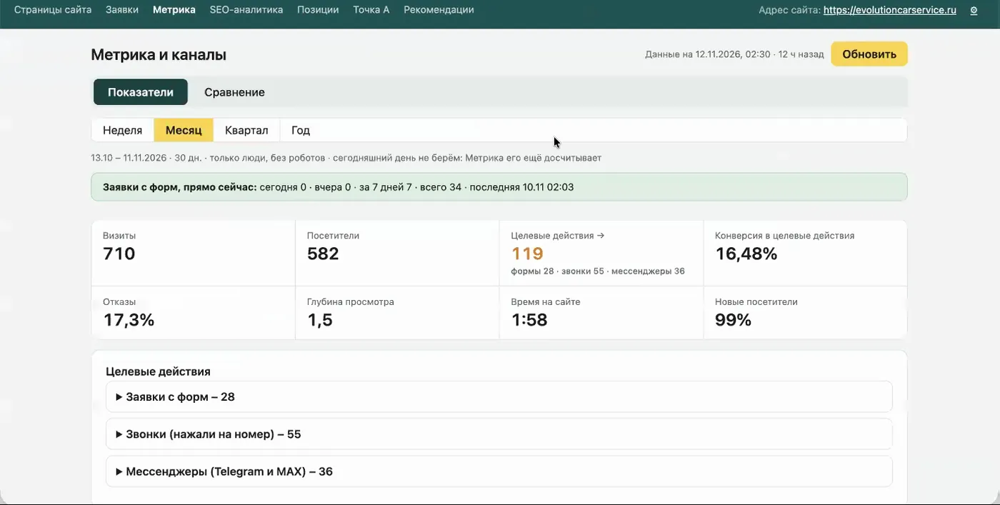
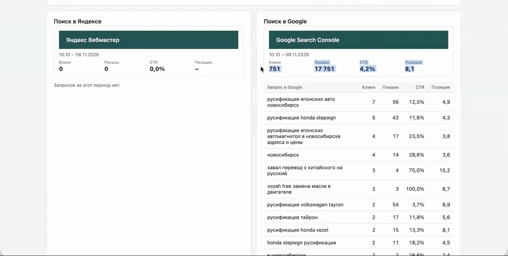
Почему только Google: переезд совпал с аварией дата-центров Яндекса в октябре, и его обход встал. Сейчас поднимаем Яндекс отдельно – когда он догонит, цифры вырастут. Для Минска это особенно важно: там Google даёт больше половины поиска.
Всё про сайт и заявки – в одном кабинете
Такой же кабинет получит mds.by. Вы видите не просто «пришла заявка», а кто это, откуда пришёл, сколько раз заходил и что смотрел.
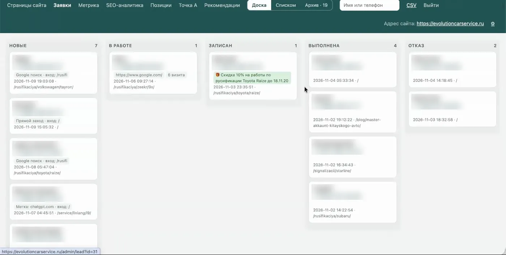
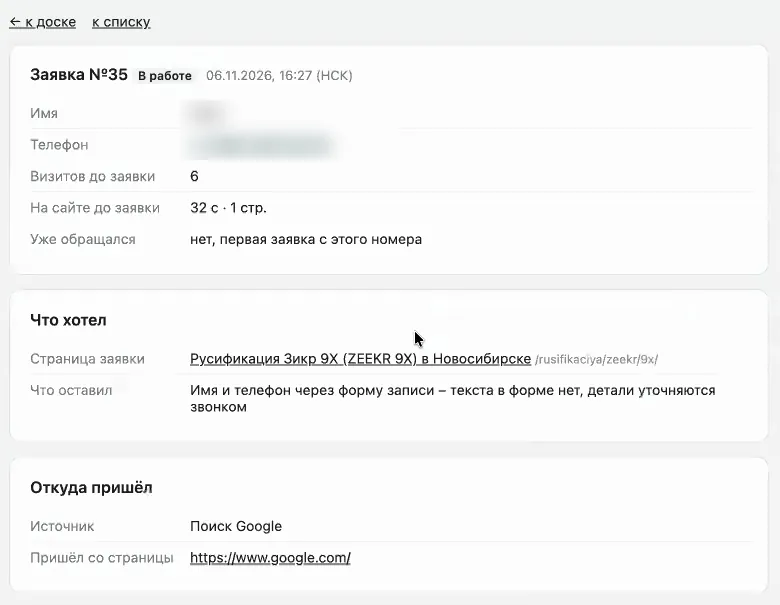
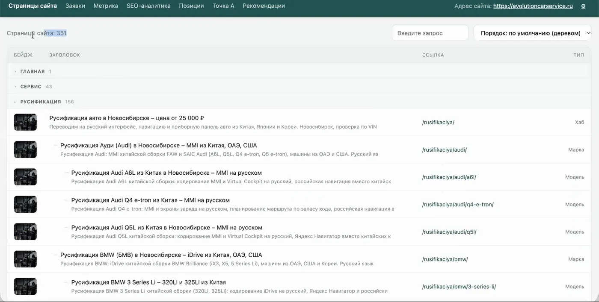
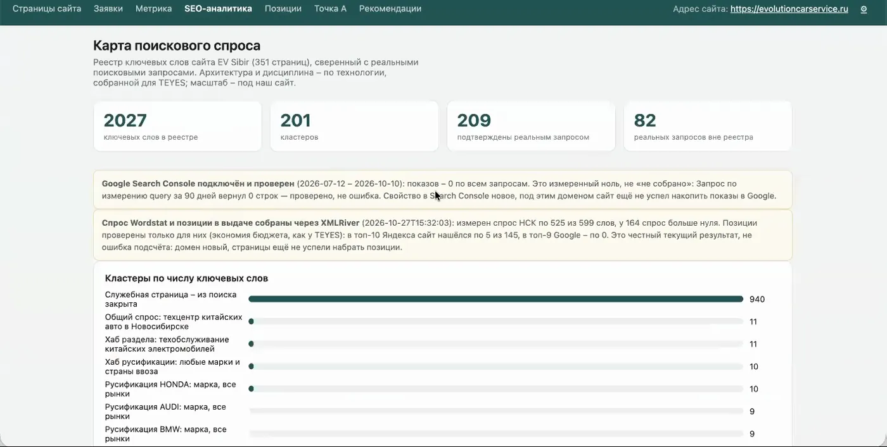
Клиенты всё чаще спрашивают не поисковик, а нейросеть. Наш техцентр там уже советуют
Нейросеть советует сервис, когда на его странице есть всё, что нужно для ответа: цена, что входит, сроки, как проходит работа. Поэтому страницы услуг MDS делаем подробными – с ценами и примерами, а не «звоните, всё расскажем».
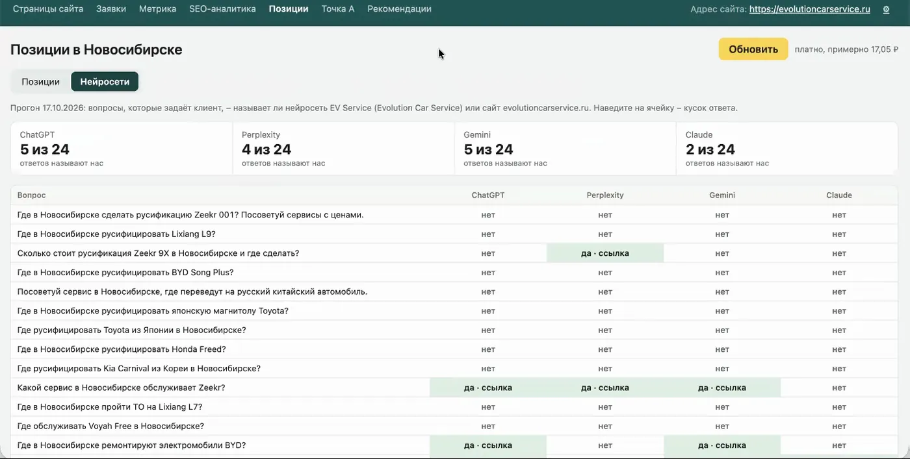
Обычный поиск
Новая страница попадает в индекс за 1–3 недели. После этого видно, как она встала и что докрутить.
Ответы нейросетей
В среднем через месяц после того, как на страницах появились цены и подробности.
Замеры
Позиции и ответы нейросетей снимаем платными сервисами – около 1 000 ₽ за прогон. При ведении это уже заложено в работу.
Сначала переезд и все страницы, потом – докрутка каждой
Переносим mds.by на код
Дизайн как сейчас, все страницы и адреса, переадресация со старых, админка с заявками и аналитикой.
Поднимаем страницы второго и третьего релиза
Те, что мы с вами уже обсуждали. Смотрим аналитику спроса, решаем, что выводим первым, и выкладываем сразу пачкой – страницы начинают индексироваться.
Докручиваем каждую страницу
Временные картинки меняем на ваши фото работ, уникализируем блоки, добавляем цены и подробности для нейросетей. Здесь понадобятся ваши фото и ответы по услугам.
Ведём дальше по цифрам
Каждую неделю – Метрика и позиции. По ним решаем, что усилить, какие страницы добавить, о чём писать в блог.
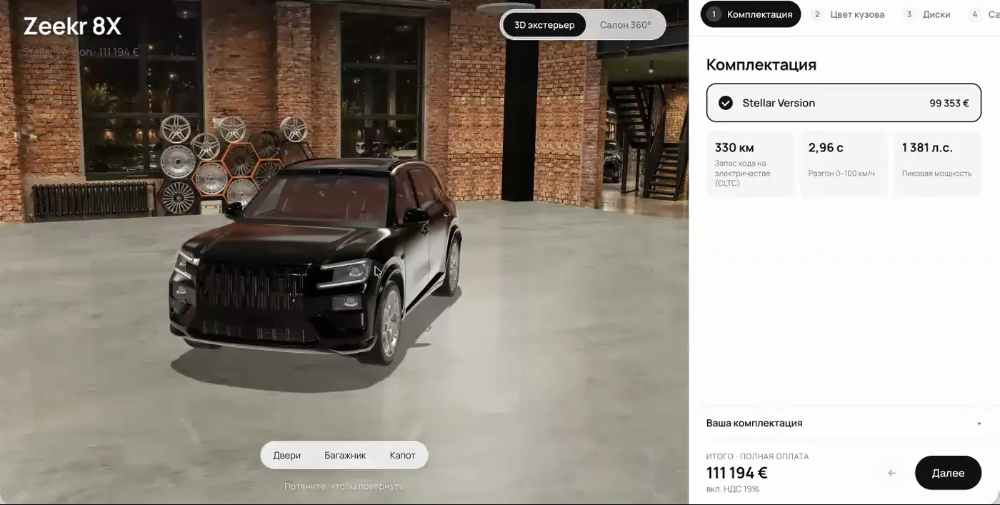
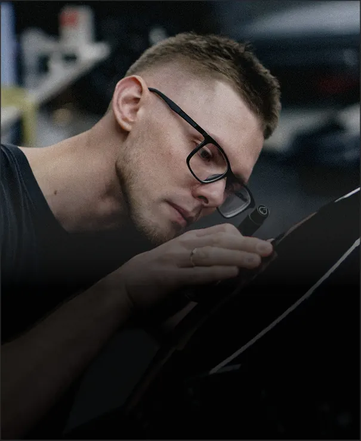
Что сколько стоит
Перенос сайта на код
- Сайт целиком в вашем дизайне
- Переадресация старых адресов, чтобы не потерять позиции
- Админка: страницы, заявки, Метрика
- Цена для тех, кому мы уже делали сайт
Ведение и выкладка страниц
- Новые страницы услуг под спрос Минска
- Доработка страниц: фото, цены, блоки
- Метрика и позиции каждую неделю
- Блог и ответы для нейросетей
- Не всё продвижение «от и до», но большая его часть
Аудит ссылок: что на вас уже ссылается, где выгодно размещаться, план закупки.
Работа со ссылками и картами по плану после аудита.
Если найдём платные площадки, бюджет на них – отдельно, согласуем заранее.
Как обычно. SEO-специалист отдельно – 50–80 тысяч ₽ в месяц (500–1 000 $), плюс дизайнер и разработчик за каждую новую страницу.
У нас. Тот же объём в облегчённом формате: убрали то, что не даёт заявок, оставили то, что работает, – и страницы делаем сами.
Начать можно на этой неделе
Чем раньше страницы попадут в поиск, тем раньше пойдут заявки: индексация занимает 1–3 недели, и это время уже не ускорить. Переезд займёт около недели – дальше начинается работа по страницам.
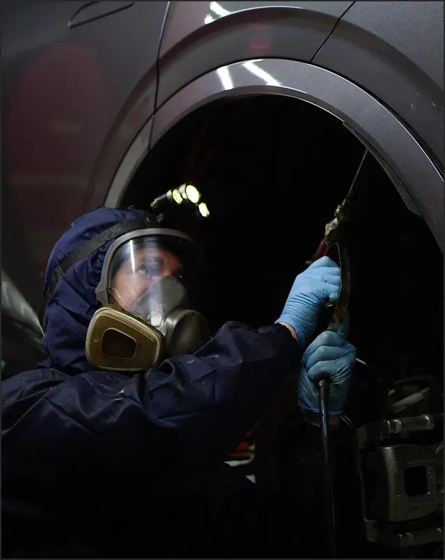
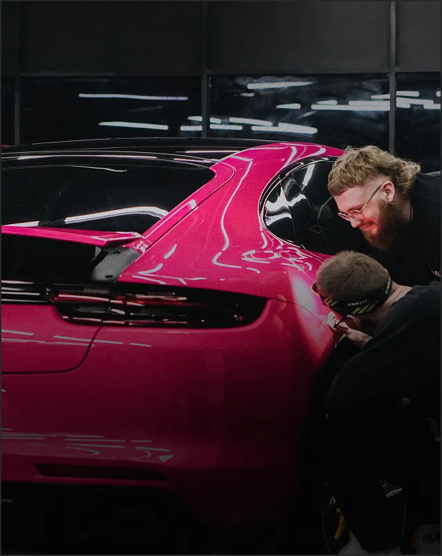
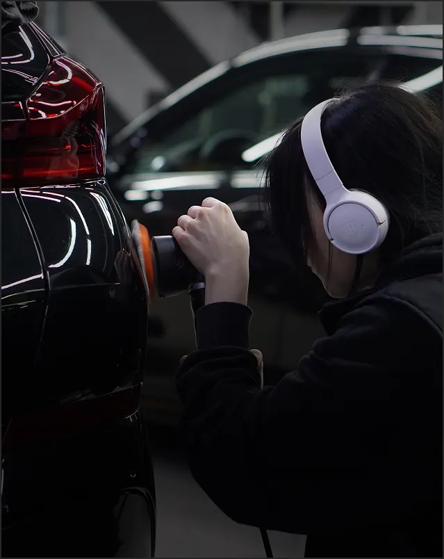

Артём Галимов
Основатель студии Deford. Сайты на коде, SEO и продвижение. Созвонимся и покажем админку и цифры подробнее.